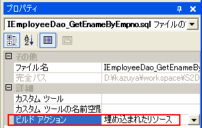

|
 |
|||||
S2Dao.NET TOPページへ
S2Dao.NET - SQLファイルSQLファイルにはDaoのメソッドに対応した検索、更新処理を行うSQL文を記述します。Daoに定義したメソッドを呼び出すと、 対応するSQLファイルに記述されているSQL文が発行されます。 ※ S2Dao.NETにはSQLを自動で生成する機能が用意されているので、SQLファイルが無い場合はS2Dao.NETがSQL文を自動生成します。 SQLファイルの配置場所作成したSQLファイルはDaoと同じ名前空間に配置して下さい。 C#プロジェクトの場合は、フォルダを作成すると名前空間が作成されます。 VB.NETプロジェクトの場合は、フォルダを作成しても名前空間は作成されません。 例えば、プロジェクトフォルダ/Sample/Dao/IEmployeeDao_GetAllEmployees.sqlとすると、 C#プロジェクトの場合の名前空間を含む完全限定名は 既定の名前空間/Sample/Dao/IEmployeeDao_GetAllEmployees.sqlになります。 VB.NETの場合は、既定の名前空間/IEmployeeDao_GetAllEmployees.sqlになります。 SQLファイルのビルドアクションプロパティSQLファイルのビルドアクションプロパティは、下図のように埋め込まれたりソース に設定しなくてはいけません。ただしVisual Studio 2005のWebサイトプロジェクトでは埋め込まれたリソースにすることが出来ないので、 別のクラスライブラリプロジェクト等を作成して、そこにDaoインターフェースとSQLファイルを配置する必要があります。 SQLファイル名S2Dao.NETにはSQLファイルの命名規則があります。 SQLファイルとDaoに定義したメソッドの関連付け作成したSQLファイルとDaoに定義したメソッドの関連付けをするには、SQLファイルのファイル名を以下の形式にする必要があります。 - Daoのクラス名_メソッド名.sql Seasar.Dao.Examples/SqlFile/IEmployeeDao#GetEnameByEmpnoに対応するSQLファイルは以下のようになります。 Seasar.Dao.Examples/SqlFile/IEmployeeDao_GetEnameByEmpno.sql 複数DBMS対応DBMS毎に使用するSQLファイルを指定することが出来ます。どのDBMSを使っているのかは、 Diconファイルに登録されているデータプロバイダとS2Dao.NETが持っているDbms.resxからS2Dao.NETが自動的に判断しています。 S2Dao.NETのほうでDBMS毎にサフィックスを決めているので、SQLファイル名にサフィックスを追加します。 例えばオラクルの場合、サフィックスはoracleなので「IEmployeeDao_GetEnameByEmpno_oracle.sql」というファイル名になります。 DBMSとサフィックスの関係は以下の通りです。
SQL文の記述SQLファイルには"SELECT * FROM EMP", "DELETE FROM EMP WHERE EMPNO=7788"といった、 普通のSQL文を記述することが可能です。また、WHERE句の条件の値等を動的に変化させることも可能です。 詳しくは、SQLコメントのドキュメントを参照して下さい。 |
||||||||||||||||||
| © Copyright The Seasar Project and the others 2004-2009, all rights reserved. |